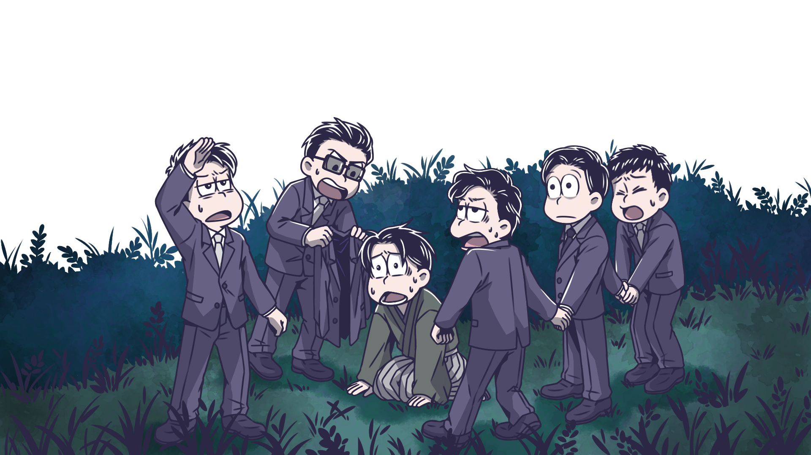
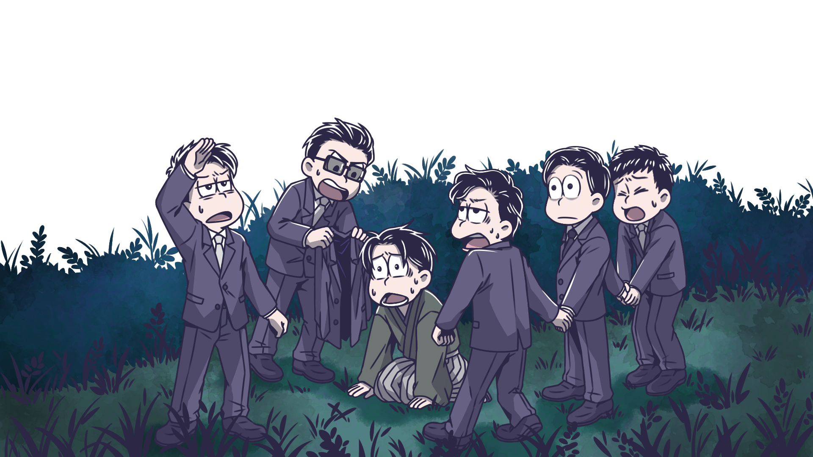

ILLUST: 茶喵 FB
うだるように暑い夏。閉鎖的な山村に居合わせた6人の新品。これは偶然か？それとも運命なのか――
2017.08.10
ILLUST: 松江(J2.) Plurk｜ Twitter
ILLUST: 阿蟻 Twitter
真冬の赤ツ鹿へと再び集い、雪に閉ざされる6人。視感の恐怖と雪の異名“六花”。この場所は現実か？
2017.12.26
ILLUST: 溟mei Plurk｜ Twitter
長雨の中、黒い蝙蝠傘を差して何処かへと向かう6つ子…
2018.06.08
ILLUST: 決子 Plurk｜ Twitter
収穫祭で賑わう赤ツ鹿村へ集まった6つ子。
2018.10.26
ILLUST: 艾莉 Twitter｜ FB
十四松祀りの前夜、深夜零時頃の出来事…
2018.06.28
ILLUST: 克勞德 Plurk｜ FB
秋の宵に客を迎える儀式とされる古い山車の列と歩む6つ子。
2019.09.30
ILLUST: 松ㄊ Plurk｜ Twitter
赤ツ鹿村から一番近いひなびた町の喫茶店の息子として育ったトド松。自分と瓜二つの5人の兄達と穏やかなひと時を過ごしていたが…
2020.04.24
ILLUST: 叔貝 Plurk
いつの間にか出来た葛折の山道を抜けた先で、来る度に様子の変わる一軒のライブハウスに辿りつく…
旧家の令嬢トト子。自らがボーカルをつとめるデスメタルガールズバンド「殺人魚」で今宵も絶叫する…
ILLUST: 醬油 Twitter｜ FB
秋喫茶ニューヨークで兄弟たちとひと時を過ごす… いた時の動作が誰かに似ていて、血は争えない。
2020.11.01
ILLUST: 可可豆 Plurk
あの冬の、赤ツ鹿村へ。
2021.01.01
HOST·PuTing Plurk| Twitter ILLUST· 茶喵｜松江(J2.)｜阿蟻｜溟mei｜決子 艾莉｜克勞德｜松ㄊ｜叔貝｜醬油｜可可豆 SOURSE：へそウォ公式、 pixabay TO BE CONTINUED...

 
